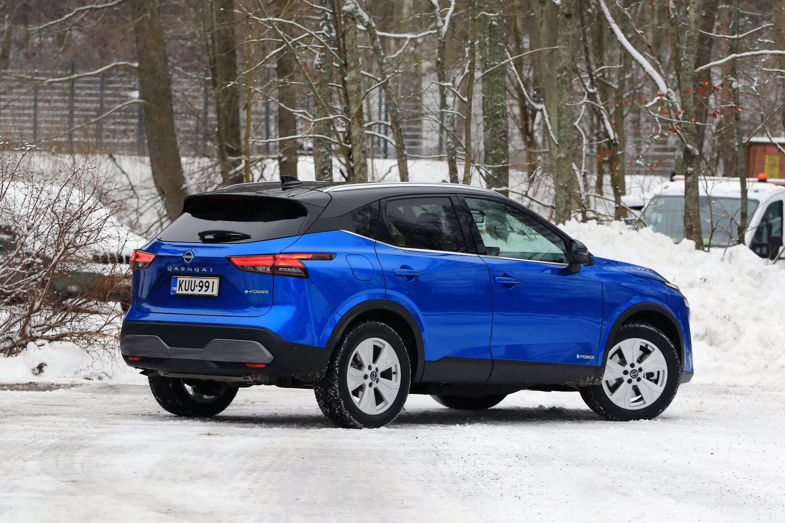

Suomen uusien autojen kauppa on ollut pitkään vaikeuksissa. Poikkeuksena on Lappi, jossa myyntimäärät kasvoivat viime vuonna 15 prosentilla.

Vuosi 2025 oli Suomen uusien autojen kaupan kannalta murheellinen. Uusia autoja rekisteröitiin 71 888 kappaletta, ja määrä putosi kolmella prosentilla surkeana pidetystä edellisvuodesta. Kun katsotaan, miten autokauppa jakautui maakunnittain, huomataan mielenkiintoinen poikkeama. Vaikka lähes kaikkialla muualla Suomessa kauppa kyntää tukevasti miinuksilla tai korkeintaan paikallaan, oli viime vuosi Lapin autokaupalle vahva kasvun vuosi. Myynnit kasvoivat peräti yli 15 prosentilla edellisvuodesta. Lappi oli toinen autokaupan vahvan kasvun maakunnista. Se toinen oli 9 prosentin kasvuun yltänyt Keski-Pohjanmaa. Miten Lapissa autokauppa kasvaa noin voimakkaasti, kun samaan aikaan vähän etelämmässä Pohjois-Pohjanmaan ja Kainuun maakunnissa myynnit ovat yhä miinusmerkkisiä. Yksi syy saattaa liittyä koronavuosiin. Ne kurittivat Lappia erityisen pahasti, koska korona pysäytti matkailun, ja Pohjoiselle tärkeät ulkomaiset turistit jäivät tulematta. Rahavirtojen tyrehtyminen on pakotti tuolloin monet yritykset ja yksityishenkilöt säästökuureille, ja säästöjä on voitu tehdä esimerkiksi lykkäämällä autojen vaihtoja. Siten pohjoiseen on saattanut syntyä muuta Suomea enemmän patoutunutta kysyntää. Toinen selitys taas voi olla se, että kun matkailu on koronan jälkeen elpynyt ja turistit palanneet, on autoja myyty runsaasti taksiyhtiöille ja autovuokraamoille. Pörhön Autoliike on pohjoisen automarkkinassa suuri tekijä. Pörhön toimitusjohtajalla Timo Hannukselalla onkin selvä näkemys, että Lapin autokaupan hyvä vire on juuri turismin ansiota. - Kasvun takana on matkailu ja nimenomaan autovuokraamokauppa. Vuokraamot ostavat niin paljon autoja, että se näkyy tilastoissa, Hannuksela kertoo. Turismin ja autovuokraamojen vaikutusta havainnollistaa se, että viime vuonna Lapissa myytiin 2087 uutta autoa. Määrä on käytännössä sama kuin Keski-Suomessa, jossa myynti putosi 2119 autoon.
Autovuokraamoiden autohankinnoissa korostuvat tietyn tyyppiset autot. - Ehdottomasta valtamäärä vuokraamoille myydyistä autoista on sellaisia hyvin kansanautotyyppisiä perusautoja. A- ja B-segmentin autoja, ja jonkin verran C-luokkaa, hän kertoo. Eli Lappiin matkustavat turistit haluavat premiumin sijaan vain tavallisen luotettavan auton alleen lomansa ajaksi. - Meidän liikkeen osalta korostuu kaksi automallia: Nissan Qashqai ja Volkswagen Taigo. Jos autovuokraamot ovat nyt täyttäneet autokokoelmansa, niin onko vaara, että tarve on tyydytetty ja kauppa alkaa hyytyä 2026? Hannuksela ei usko tähän. - Jo edellisvuonna myimme vuokraamoille paljon autoja. Autovuokraamoille se keskimääräinen aikajänne, jonka ajan autoja pitävät, on kaksi vuotta. Eli sieltä toisesta päästä alkavat jo ne edellisvuonna myydyt autot mennä vanhaksi. Optimistiset arviot ovat povanneet Suomen autokaupalle jopa 10 prosentin kasvua tälle vuodelle. Pessimistisemmät pelkäävät kasvun jäävän 0-5 prosenttiin. Hannuksela kuuluu optimisteihin. - Kyllä se kasvu tulee olemaan varmasti enemmän kuin viisi prosenttia, hän lupaa ja muistuttaa markkinan yhä vasta toipuvan korona-ajasta ja sen seurauksista. - Korona-ajan komponenttipulan takia autojen toimitusajat venyivät todella pitkiksi. Vuosina 2020-2023 myytiin paljon sellaisia autoja, mitä ei voitu toimittaa. Ja niitä aiemmin tilattuja autoja sitten luovutettiin asiakkaille vasta 2023 ja 2024. Vuonna 2024 kilpiin menikin siis silloin myytyjen autojen lisäksi myös runsaasti paljon aikaisemmin tilattuja autoja. Tämän takia rekisteröintimäärät olivat niin suuret, että tänä vuonna rekisteröintimäärät putosivat ja myynti vaikuttaa laskeneen. - Vaikka 2025 rekisteröitiin vähemmän autoja kuin edellisvuonna, niin todellisuudessa autoja kuitenkin myyntiin enemmän kuin vuotta aiemmin. Uskoisin, että 2026 saadaan 10 prosentin kasvu aikaan. source
16.1.2026